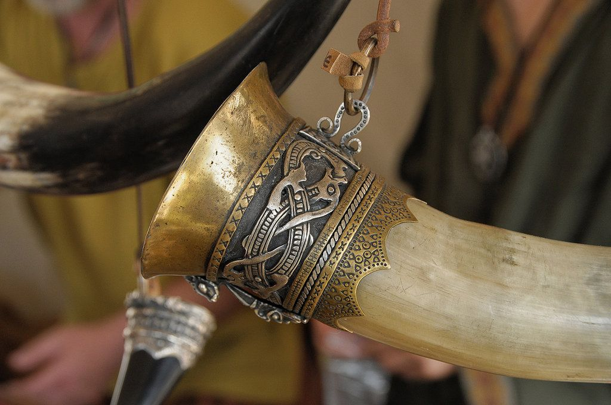

← Back to
home
Mead a.k.a Honey-Wine

Description
Vikings drank mead at seasonal feasts and other ceremonies that commemorated life’s milestones. It was about more
than just enjoying a tipple—it was a ritual. The king would be served first, followed by others according to their
social rank.
The Norse sometimes have a raucous reputation, but if they did get drunk quickly on mead, that might
have been partly due to the serving vessel: a drinking horn which could not easily be put down, therefore
encouraging faster consumption.
Ingredients
- 4.5L Water
- 1.3kg Honey
- 1/2 cup of raisins
- 1 packet wine or mead yeast
- 1/2 cup of oranges or lemon zest(optional)
Steps
- In a large pot, heat the honey and water over medium heat, stirring until the honey is fully dissolved. Do Not
Boil!
- Allow the honey mixture to cool to room temperature, then transfer it to a steriziled fermenting container.
- Add the yeast and any additonaly flavorings, such as raisins or citrus zest. Seal the fermenting container with
an airlock.
- Allow the mead to ferment for 2-4 weeks, or until the bubbling in the airlock slows down.
- Rack the mead into a secondary fermenting container, leaving any sediment behind. Allow the mead to age an
additional 2-6 months, or until it reaches your desired flavor and clarity
- Bottle and enjoy chilled from a Viking Horn.